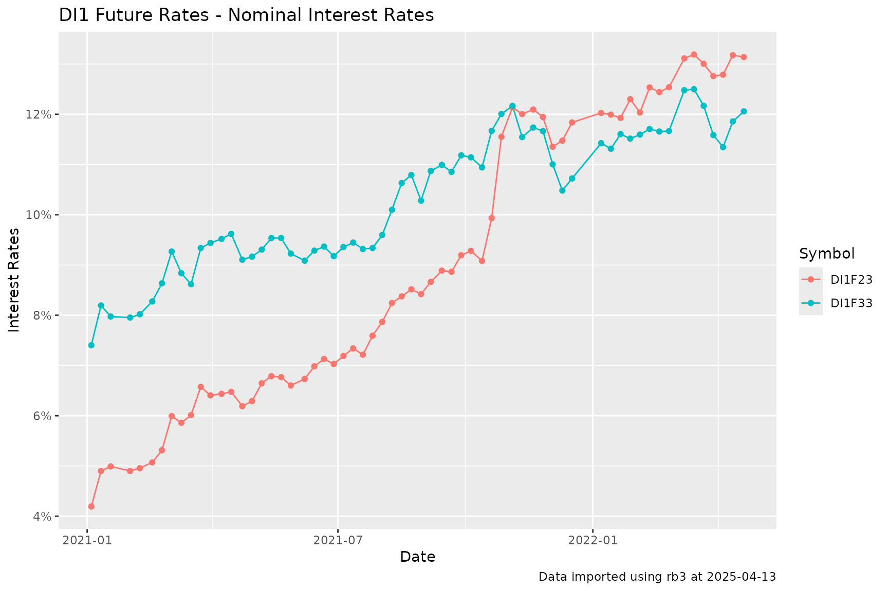
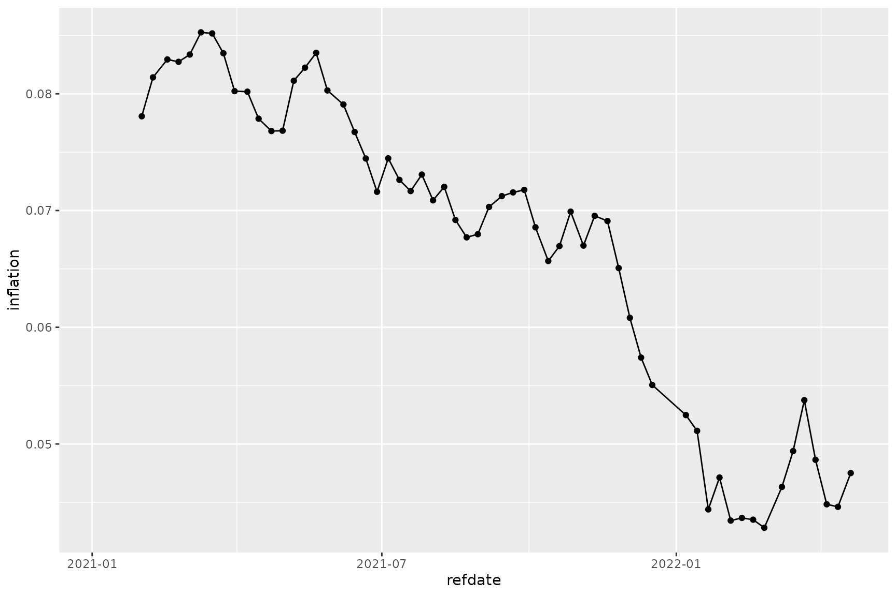
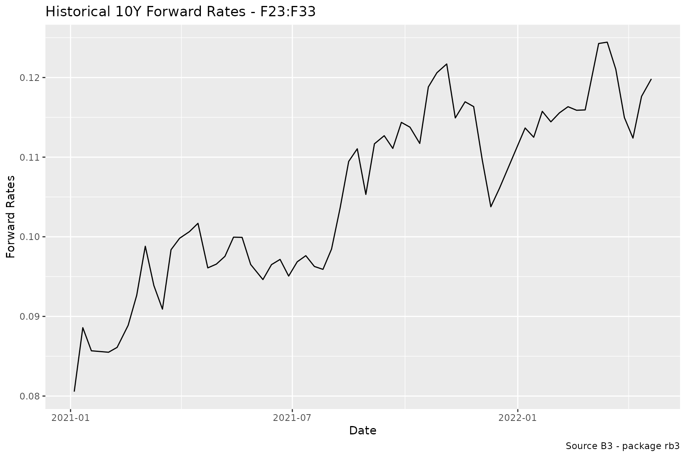

How to Compute Historical Rates from B3 Future Prices
Source:vignettes/Fetching-historical-future-rates.Rmd
Fetching-historical-future-rates.RmdThe historical prices of all futures contracts traded at B3 can be obtained with the futures_mget function. These are the settlement prices delivered daily by B3 at the Trading session settlements page.
library(rb3)
library(ggplot2)
library(stringr)
library(dplyr)
library(bizdays)
library(fixedincome)
df <- futures_mget(
first_date = "2021-01-01",
last_date = "2022-04-27",
by = 5
)Historical nominal interest rates
The interest rates can be extracted from the futures prices. The DI1 futures matures at the first day of the month. The code below generates the maturities from the three characters maturity codes. After the business days and implied rates are calculated with the fixedincome::rates function, once we know that the notional amount of these contracts is 100000.
In the graphic we can see the dynamics of the nominal interest rates of the contracts DI1F23 and DI1F33. These contracts are exactly 10 years distant from each other.
di1_futures <- df |>
filter(commodity == "DI1") |>
mutate(
maturity_date = maturity2date(maturity_code),
fixing = following(maturity_date, "Brazil/ANBIMA"),
business_days = bizdays(refdate, maturity_date, "Brazil/ANBIMA"),
adjusted_tax = rates("discrete", business_days / 252, 100000 / price)
) |>
filter(business_days > 0)
di1_futures |>
filter(symbol %in% c("DI1F23", "DI1F33")) |>
ggplot(aes(x = refdate, y = adjusted_tax, color = symbol, group = symbol)) +
geom_line() +
geom_point() +
labs(
title = "DI1 Future Rates - Nominal Interest Rates",
caption = str_glue("Data imported using rb3 at {Sys.Date()}"),
x = "Date",
y = "Interest Rates",
color = "Symbol"
) +
scale_y_continuous(labels = scales::percent)
Historical real interest rates
Differently from DI1 contracts, that trade nominal interest rates, the DAP contracts trade real interest rates.
dap_futures <- df |>
filter(commodity == "DAP") |>
mutate(
maturity_date = maturity2date(maturity_code, "15th day"),
fixing = following(maturity_date, "Brazil/ANBIMA"),
business_days = bizdays(refdate, maturity_date, "Brazil/ANBIMA"),
adjusted_tax = rates("discrete", business_days / 252, 100000 / price)
) |>
filter(business_days > 0)
dap_futures |>
filter(symbol %in% c("DAPF23", "DAPK35")) |>
ggplot(aes(x = refdate, y = adjusted_tax, group = symbol, color = symbol)) +
geom_line() +
geom_point() +
labs(
title = "DAP Future Rates - Real Interest Rates",
caption = str_glue("Data imported using rb3 at {Sys.Date()}"),
x = "Date",
y = "Interest Rates",
color = "Symbol"
) +
scale_y_continuous(labels = scales::percent)Implied inflation
With the difference between real and nominal interest rates we can obtain the forward inflation implied in these contracts.
Using the contracts DI1F23 and DAPF23, which matures in the same month, with a difference of a few days. The implied inflation can be computed by the division of the prices of these contracts.
infl_futures <- df |>
filter(symbol %in% c("DI1F23", "DAPF23")) |>
mutate(
maturity_date = if_else(commodity == "DI1",
maturity2date(maturity_code),
maturity2date(maturity_code, "15th day")
),
fixing = following(maturity_date, "Brazil/ANBIMA"),
business_days = bizdays(refdate, maturity_date, "Brazil/ANBIMA"),
adjusted_tax = rates("discrete", business_days / 252, 100000 / price)
) |>
arrange(refdate)
infl_expec <- infl_futures |>
select(symbol, price, refdate) |>
tidyr::pivot_wider(names_from = symbol, values_from = price) |>
mutate(inflation = DAPF23 / DI1F23 - 1)
infl_expec |>
ggplot(aes(x = refdate, y = inflation)) +
geom_line() +
geom_point()
Forward rates
10Y Forward rates implied in DI1 Futures prices. The contracts DI1F23 and DI1F33 are used to compute the 10Y forward rates that ranges from Jan. 2023 to Jan. 2033.
df_fut <- df |>
filter(symbol %in% c("DI1F23", "DI1F33")) |>
mutate(
maturity_date = maturity2date(maturity_code) |> following("Brazil/ANBIMA"),
business_days = bizdays(refdate, maturity_date, "Brazil/ANBIMA")
)
df_du <- df_fut |>
select(refdate, symbol, business_days) |>
tidyr::pivot_wider(names_from = symbol, values_from = business_days) |>
mutate(
du = DI1F33 - DI1F23
) |>
select(refdate, du)
df_fwd <- df_fut |>
select(refdate, symbol, price) |>
tidyr::pivot_wider(names_from = symbol, values_from = price) |>
inner_join(df_du, by = "refdate") |>
mutate(
fwd = (DI1F23 / DI1F33)^(252 / du) - 1
) |>
select(refdate, fwd) |>
na.omit()
df_fwd |>
ggplot(aes(x = refdate, y = fwd)) +
geom_line() +
labs(
x = "Date", y = "Forward Rates",
title = "Historical 10Y Forward Rates - F23:F33",
caption = "Source B3 - package rb3"
)